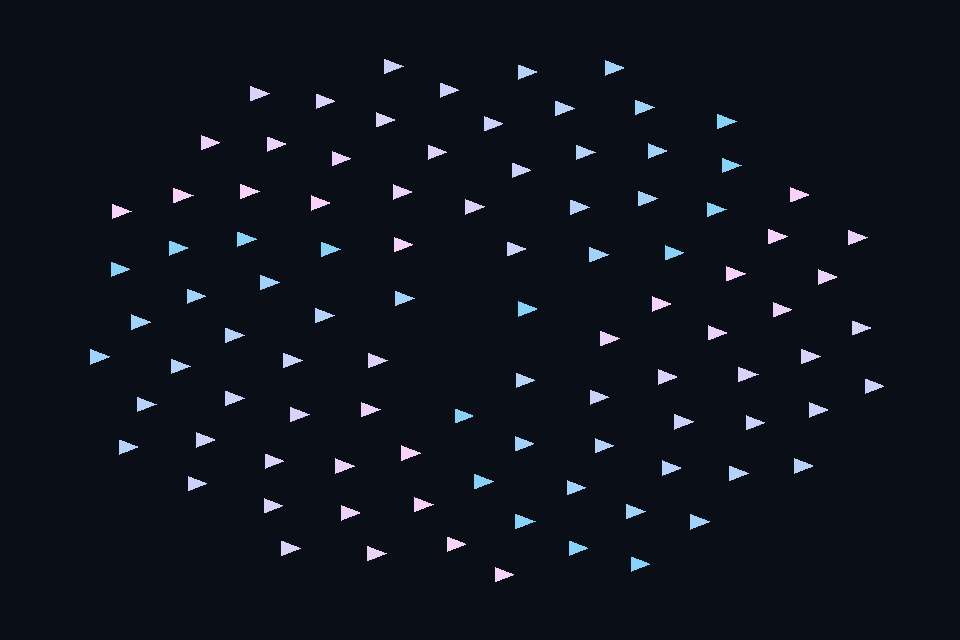

dx29_gpu_particles · GPU 生成顶点与绘制
54 课目录
目的与实际执行
同一 DEFAULT resource 允许 UAV，计算后转 VERTEX_AND_CONSTANT_BUFFER，VBV 直接引用其地址。计算提交在窗口 renderer 重置 allocator 前完成，当前路径显式等待，未宣称已做异步 compute 重叠。
本程序有独立实验选择与验证路径，公共实现集中在 advanced_labs.cpp。设备/API 检查、数值 compute 与图形渲染采用不同证据；不是每个程序都会弹出窗口。
构建和运行
cmake --preset dx12
cmake --build --preset dx12-debug --target dx29_gpu_particles --parallel 4
.\DirectX12\build\bin\Debug\dx29_gpu_particles.exe
深入学习：数据、接口与执行
本课的真实源码切片
来自 DirectX12/common/advanced_labs.cpp，第 449—492 行；这是现有实现的局部摘录，末尾可能处于函数中间，不是可单独编译的完整程序。
struct ParticleKernel {
DxDevice& c;
ComPtr<ID3D12Resource> vertices;
ComPtr<ID3D12RootSignature> signature;
ComPtr<ID3D12PipelineState> pipeline;
D3D12_RESOURCE_STATES state = D3D12_RESOURCE_STATE_UNORDERED_ACCESS;
ParticleKernel(DxDevice& context, const LabOptions& options) : c(context) {
vertices = c.buffer(96 * 3 * sizeof(Vertex),
D3D12_HEAP_TYPE_DEFAULT,
D3D12_RESOURCE_STATE_UNORDERED_ACCESS,
D3D12_RESOURCE_FLAG_ALLOW_UNORDERED_ACCESS);
D3D12_ROOT_PARAMETER params[2]{};
params[0].ParameterType = D3D12_ROOT_PARAMETER_TYPE_UAV;
params[0].Descriptor.ShaderRegister = 1;
params[1].ParameterType = D3D12_ROOT_PARAMETER_TYPE_32BIT_CONSTANTS;
params[1].Constants = {2, 0, 2};
D3D12_ROOT_SIGNATURE_DESC desc{};
desc.NumParameters = 2;
desc.pParameters = params;
signature = rootSignature(c, desc);
auto shader = labShader(options, "ParticleMain");
D3D12_COMPUTE_PIPELINE_STATE_DESC info{};
info.pRootSignature = signature.Get();
info.CS = {shader->GetBufferPointer(), shader->GetBufferSize()};
dxCheck(c.device->CreateComputePipelineState(&info, IID_PPV_ARGS(&pipeline)));
}
void execute(float time) {
struct Tick {
float time;
uint32_t count;
} tick{time, 96};
c.begin();
if (state != D3D12_RESOURCE_STATE_UNORDERED_ACCESS) {
auto b = transition(vertices.Get(), state, D3D12_RESOURCE_STATE_UNORDERED_ACCESS);
c.cmd->ResourceBarrier(1, &b);
}
c.cmd->SetComputeRootSignature(signature.Get());
c.cmd->SetPipelineState(pipeline.Get());
c.cmd->SetComputeRootUnorderedAccessView(0, vertices->GetGPUVirtualAddress());
c.cmd->SetComputeRoot32BitConstants(1, 2, &tick, 0);
c.cmd->Dispatch(5, 1, 1);
auto b = transition(vertices.Get(),
D3D12_RESOURCE_STATE_UNORDERED_ACCESS,
D3D12_RESOURCE_STATE_VERTEX_AND_CONSTANT_BUFFER);
同主题跨 API 导航
先预测，再验证
把粒子数改为 97，需要检查哪些容量与 dispatch/guard？
参考推导：顶点数变为 291，GPU buffer 与 CPU 侧 draw count 元数据都要扩大；组数向上取整，shader 以 count*3 为上界。位置仍由 GPU 生成。
验证与边界
运行 --smoke 执行有限自动检查。数值实验读取实际 GPU 结果，图形实验检查非空图像并可查看读回。交互重建与性能还需额外证据；窗口 renderer 当前保留串行等待，双槽计算实验不会被描述为完整多帧呈现引擎。
实际画面
